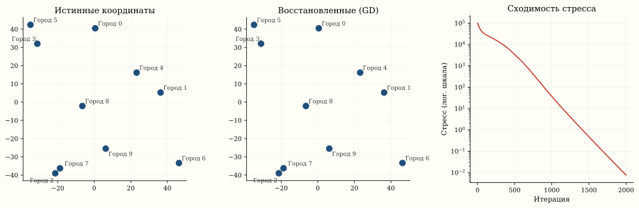
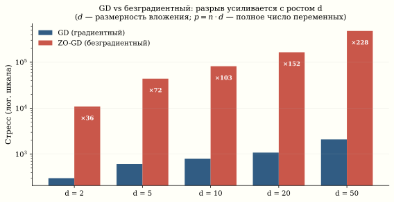

Многомерное шкалирование и проклятие размерности для безградиентных методов
Безградиентный ZO-GD на задаче с 200 переменными потребует в 200 раз больше итераций, чем градиентный спуск. С 5000 переменными — в 5000 раз. Именно поэтому нейросети не обучают без градиента. Метод Нелдера–Мида разделяет это проклятие: как и любой безградиентный подход, он не обходит теоретический барьер размерности. Чтобы понять почему, возьмём конкретную задачу: по таблице расстояний между городами восстановить карту — координаты каждого города. Это многомерное шкалирование (MDS), и на нём разрыв между методами виден физически.
Постановка задачи
Дана матрица расстояний D \in \mathbb{R}^{N \times N}, D_{ij} = \text{dist}(i, j). Хотим найти координаты W_1, \ldots, W_N \in \mathbb{R}^d, минимизирующие стресс:
\text{Stress}(W) = \sum_{i < j} \left(\|W_i - W_j\|_2 - D_{ij}\right)^2.
Это задача безусловной минимизации L(W) \to \min_{W \in \mathbb{R}^{N \times d}} с Nd переменными.
Если расстояния — евклидовы, задача решается точно через собственное разложение матрицы Грама B = -\frac{1}{2} J D^{(2)} J, где J = I - \frac{1}{n}\mathbf{1}\mathbf{1}^T и D^{(2)} — матрица квадратов расстояний. Это classical MDS (Torgerson, 1952). Но для неевклидовых расстояний или неполных данных нужна итеративная оптимизация.
Пример: восстановление карты городов
import numpy as np
import matplotlib.pyplot as plt
# 10 «городов» — случайные координаты
np.random.seed(42)
n_cities = 10
true_coords = np.random.rand(n_cities, 2) * 100
city_names = [f"Город {i}" for i in range(n_cities)]
# Матрица расстояний
D = np.zeros((n_cities, n_cities))
for i in range(n_cities):
for j in range(n_cities):
D[i, j] = np.linalg.norm(true_coords[i] - true_coords[j])
# Забудем координаты, оставим только D
# Восстановим координаты через стресс-оптимизацию
def stress(W_flat, D, d=2):
n = D.shape[0]
W = W_flat.reshape(n, d)
s = 0
for i in range(n):
for j in range(i+1, n):
dist_ij = np.linalg.norm(W[i] - W[j])
s += (dist_ij - D[i, j]) ** 2
return s
def stress_gradient(W_flat, D, d=2):
n = D.shape[0]
W = W_flat.reshape(n, d)
grad = np.zeros_like(W)
for i in range(n):
for j in range(i+1, n):
diff = W[i] - W[j]
dist_ij = np.linalg.norm(diff) + 1e-10
factor = 2 * (dist_ij - D[i, j]) / dist_ij
grad[i] += factor * diff
grad[j] -= factor * diff
return grad.flatten()
# Градиентный спуск
W = np.random.randn(n_cities * 2) * 10
lr = 0.001
for step in range(2000):
g = stress_gradient(W, D)
W -= lr * g
W_recovered = W.reshape(n_cities, 2)
# Центрирование + Прокрустово выравнивание
W_recovered -= W_recovered.mean(axis=0)
true_centered = true_coords - true_coords.mean(axis=0)
# SVD для оптимального поворота
U, _, Vt = np.linalg.svd(true_centered.T @ W_recovered)
R = (U @ Vt)
W_aligned = W_recovered @ R.T
stress_history = []
W_track = np.random.randn(n_cities * 2) * 10
for step in range(2000):
g = stress_gradient(W_track, D)
W_track -= lr * g
stress_history.append(stress(W_track.reshape(n_cities, 2), D))
fig, axes = plt.subplots(1, 3, figsize=(14, 4.5))
for ax, data, title in zip(axes[:2],
[true_centered, W_aligned],
["Истинные координаты", "Восстановленные (GD)"]):
ax.scatter(data[:, 0], data[:, 1], s=80, c='#1F4E79')
for i in range(n_cities):
ax.annotate(city_names[i], data[i] + 1, fontsize=9)
ax.set_aspect('equal')
ax.set_title(title)
ax.spines[['top', 'right']].set_visible(False)
ax.grid(True, alpha=0.25, linewidth=0.5)
# Третья панель: сходимость стресса
axes[2].semilogy(stress_history, color='#C0392B', linewidth=1.5)
axes[2].set_title("Сходимость стресса")
axes[2].set_xlabel("Итерация")
axes[2].set_ylabel("Стресс (лог. шкала)")
axes[2].spines[['top', 'right']].set_visible(False)
axes[2].grid(True, alpha=0.25, linewidth=0.5)
Градиентный спуск vs безградиентные методы
Задача MDS — идеальный полигон для сравнения: размерность p = Nd растёт с N и d.
Восстановим один и тот же набор точек из матрицы расстояний двумя способами — потяните любую точку и смотрите, как стресс снова срывается вниз, а потом сравните скорость градиентного и безградиентного методов.
Градиент стресса
\frac{\partial L}{\partial W_i} = 2 \sum_{j \neq i} \frac{\|W_i - W_j\| - D_{ij}}{\|W_i - W_j\|} (W_i - W_j).
Вычисление: O(N^2 d) операций — одна итерация GD.
Безградиентные методы
Если градиент недоступен (чёрный ящик), используем аппроксимацию. Двухточечная оценка:
G_k = d \cdot \frac{L(W + \varepsilon v_k) - L(W - \varepsilon v_k)}{2\varepsilon} v_k,
где v_k — случайное направление. В среднем \mathbb{E}[G] = \nabla L, но дисперсия оценки \propto d.
Проклятие размерности для безградиентных методов
Ключевой теоретический результат1:
1 Shamir. On the Complexity of Bandit and Derivative-Free Stochastic Convex Optimization, COLT, 2013.
| Метод | Гладкая f | Гладкая выпуклая | Сильно выпуклая |
|---|---|---|---|
| GD | \|\nabla f\|^2 \lesssim \frac{1}{k} | f - f^* \lesssim \frac{1}{k} | \|x - x^*\|^2 \lesssim \left(1 - \frac{\mu}{L}\right)^k |
| Zero-order GD | \lesssim \frac{\mathbf{d}}{k} | \lesssim \frac{\mathbf{d}}{k} | \lesssim \left(1 - \frac{\mu}{\mathbf{d} L}\right)^k |
Безградиентные методы платят фактор d в скорости сходимости. Для MDS с N = 100 городами в d = 2 измерениях: p = 200, фактор d = 200. В d = 50: p = 5000, фактор d = 5000.
Каждая лишняя размерность обходится безградиентному методу одной лишней итерацией. Для нейросети с 10^8 параметрами — это смертный приговор.
Численный эксперимент
import numpy as np
import time
def zero_order_gd(f, x0, eps=1e-4, lr=0.001, max_iter=1000):
"""Безградиентный GD: двухточечная оценка."""
x = x0.copy()
d = len(x)
hist = []
for _ in range(max_iter):
v = np.random.randn(d)
v /= np.linalg.norm(v)
g_est = d * (f(x + eps*v) - f(x - eps*v)) / (2*eps) * v
x -= lr * g_est
hist.append(f(x))
return x, hist
def first_order_gd(f, grad_f, x0, lr=0.001, max_iter=1000):
"""Обычный GD с точным градиентом."""
x = x0.copy()
hist = []
for _ in range(max_iter):
x -= lr * grad_f(x)
hist.append(f(x))
return x, hist
# Сравнение на MDS
results = {}
for d_embed in [2, 5, 10, 20, 50]:
n = 30
true_W = np.random.randn(n, d_embed)
D = np.zeros((n, n))
for i in range(n):
for j in range(n):
D[i, j] = np.linalg.norm(true_W[i] - true_W[j])
f = lambda w: stress(w, D, d_embed)
gf = lambda w: stress_gradient(w, D, d_embed)
x0 = np.random.randn(n * d_embed) * 5
t0 = time.time()
# lr=1e-4: безопасный шаг для точного градиента (L-Lipschitz)
_, hist_gd = first_order_gd(f, gf, x0.copy(), lr=1e-4, max_iter=500)
time_gd = time.time() - t0
t0 = time.time()
# lr=1e-5: ZO-GD требует меньший шаг из-за дисперсии оценки ∝ d
_, hist_zo = zero_order_gd(f, x0.copy(), lr=1e-5, max_iter=500)
time_zo = time.time() - t0
results[d_embed] = {
'gd_final': hist_gd[-1],
'zo_final': hist_zo[-1],
'gd_time': time_gd,
'zo_time': time_zo,
'p': n * d_embed
}
print(f"d={d_embed:>3d}, p={n*d_embed:>5d}: "
f"GD={hist_gd[-1]:.2f} ({time_gd:.2f}s), "
f"ZO={hist_zo[-1]:.2f} ({time_zo:.2f}s)")
Что видно
На фигуре — реальные результаты запуска кода выше (seed=42). Разрыв усиливается с ростом d: при d=2 безградиентный хуже примерно в 36 раз, при d=50 — уже в 200+ раз. Теоретический фактор d — верхняя оценка; эмпирический рост медленнее (6× при 25-кратном росте d). Точные числа зависят от seed и гиперпараметров, но качественная картина устойчива.
Градиентный спуск, получая точный вектор \nabla L \in \mathbb{R}^p, движется по правильному направлению с первой итерации — независимо от того, насколько велико p.
Автоматическое дифференцирование (autograd в PyTorch, JAX) позволяет вычислять точный градиент любой дифференцируемой функции за время, сопоставимое с одним вычислением функции (обратный проход ≤ 4× прямого). Это делает методы первого порядка доступными для любой задачи, не только для тех, где градиент можно выписать аналитически.
Именно поэтому нейросети обучаются: задача с 10^{11} параметров решается SGD с точным (автоматически вычисленным) градиентом, а не безградиентными методами.
Связь MDS с PCA
Классический MDS и PCA тесно связаны. Если расстояния евклидовы, классический MDS даёт те же координаты, что PCA матрицы координат:
B = -\frac{1}{2} J D^{(2)} J = X X^T \implies \text{eigendecomposition} \implies \text{координаты} = U_k \Lambda_k^{1/2}.
Но PCA требует знания координат X, а MDS — только расстояний D. MDS работает даже когда координаты неопределены (перцептуальные расстояния, лингвистическое сходство).
Применения MDS
| Область | Данные | Расстояния |
|---|---|---|
| География | Города | Реальные км |
| Психология | Стимулы | Перцептуальное сходство |
| NLP | Слова | 1 - \cos(v_i, v_j) |
| Биоинформатика | Белки | Edit distance |
| Социология | Люди | Социальная дистанция |
Связи
- PCA (§ PCA): классический MDS ≡ PCA из расстояний
- t-SNE, UMAP: нелинейные варианты MDS
- Градиентный спуск (§ Часть V): первый порядок решает MDS за секунды
- Автоматическое дифференцирование: вычисляет \nabla стресса без ручных формул
- Проклятие размерности (§ Loss Landscape): концентрация меры и её последствия
- Интерактивный бенчмарк сравнения методов на задаче MDS — benfrederickson.com/numerical-optimization